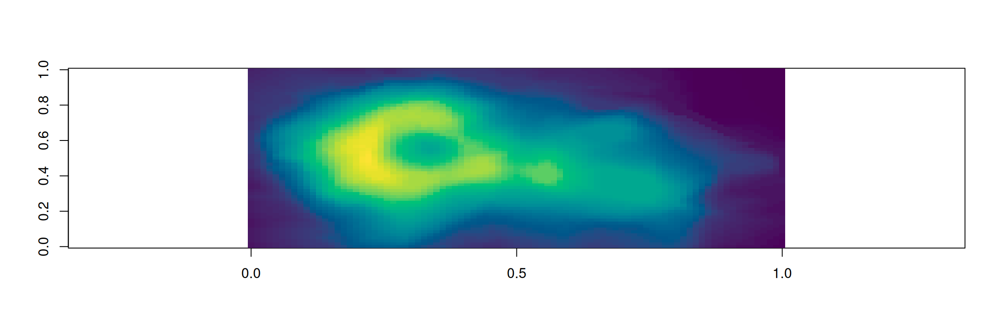
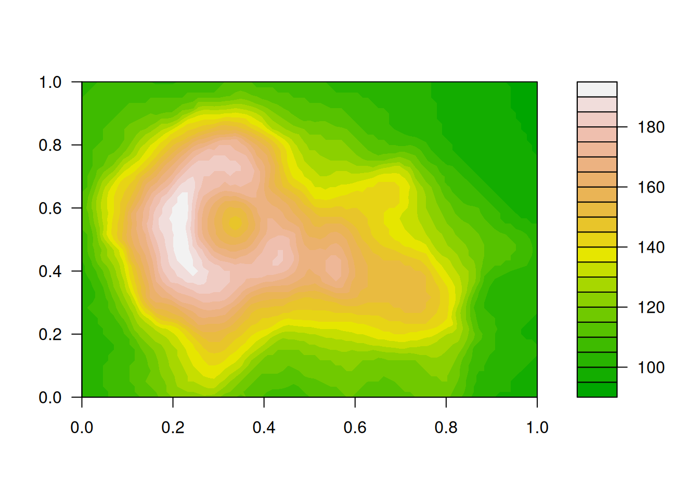
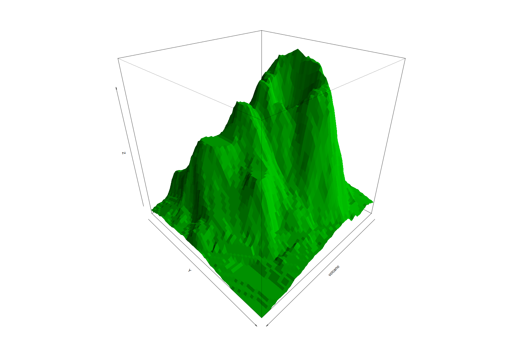
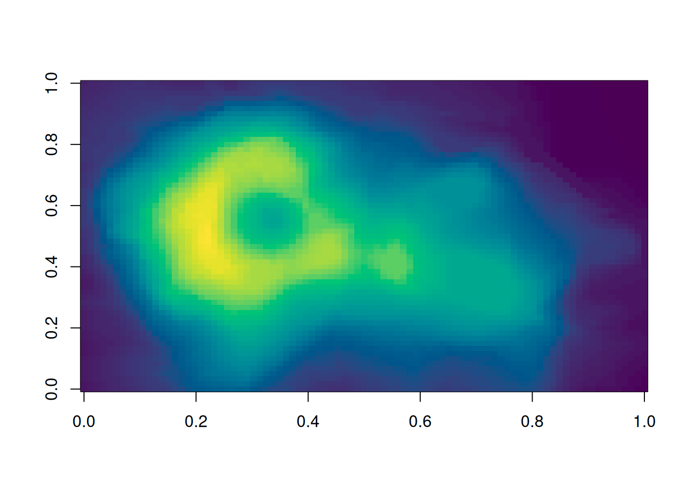
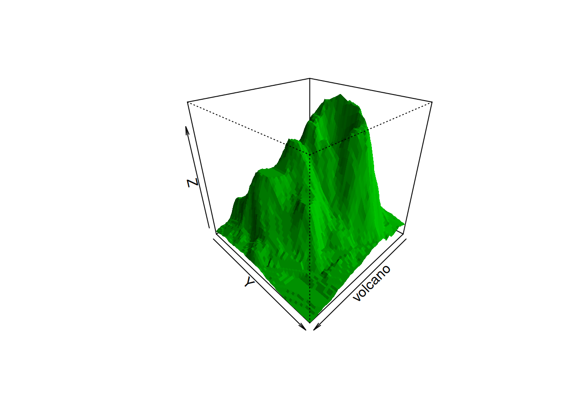

```{r}
#| panzoom: true
#| fig-width: 12
#| fig-height: 4
image(volcano, col = hcl.colors(100, "Viridis"), asp = 1 / 3)
```
A full-screen pan/zoom viewer for Quarto figures
This is a Quarto extension that opens figures in a full-screen viewer, built on Panzoom: scroll to zoom toward the cursor, drag to pan, double-click or 0 to reset, Esc to close. It attempts to match, and extend, the feature set of Quarto’s built-in lightbox. Source and documentation: https://github.com/sekoclancy/panzoom.
quarto add sekoclancy/panzoomMark a code cell with #| panzoom: true. Click the figure to open it, scroll to zoom toward the cursor, drag to pan, double-click to reset, Esc to close.
```{r}
#| panzoom: true
#| fig-width: 12
#| fig-height: 4
image(volcano, col = hcl.colors(100, "Viridis"), asp = 1 / 3)
```
Labeled figures work too (Figure 1). Options under #| panzoom: override the document’s settings for one cell: this figure zooms to 10 instead of the page’s 6, and hides the hint.
```{r}
#| label: fig-volcano
#| fig-cap: "Maunga Whau volcano."
#| panzoom:
#| max-zoom: 10
#| hint: false
filled.contour(volcano, color.palette = terrain.colors)
```

.panzoom class.The viewer shows the figure’s caption. Plots with the same group form a gallery: use the ‹ › buttons, ←/→ or a swipe to step through them. Subfigures of one figure are a gallery automatically.
```{r}
#| panzoom:
#| group: volcano-views
#| fig-cap:
#| - "Volcano heights as an image."
#| - "The same data as a perspective plot."
#| layout-ncol: 2
image(volcano, col = hcl.colors(100, "Viridis"))
persp(volcano, theta = 135, phi = 30, col = "green3", shade = 0.5, border = NA)
```

```{r}
#| label: fig-volcano-sub
#| fig-cap: "Two views of Maunga Whau, as subfigures."
#| fig-subcap: ["Contours", "Filled contours"]
#| layout-ncol: 2
#| panzoom: true
contour(volcano)
image(volcano)
```

Without the option, Quarto’s own lightbox still handles the figure.
```{r}
contour(volcano)
```Inside a .panzoom div, every image gets the viewer except one marked .nopanzoom. panzoom then leaves that image to Quarto: this page has lightbox: true, so the image below opens in Quarto’s lightbox instead (where a click toggles between fit and full size). Without a lightbox, it would open nothing. For a whole code cell, use #| panzoom: false.
::: {.panzoom}
{.nopanzoom width=40%}
:::The same 12 lightbox situations (galleries, subfigures, captions with math, images in links, margin images, …) rendered four ways:
lightbox: true with some images marked for panzoom.match: auto: panzoom picks the images itself..panzoom or #| classes: panzoom.And one page of its own: